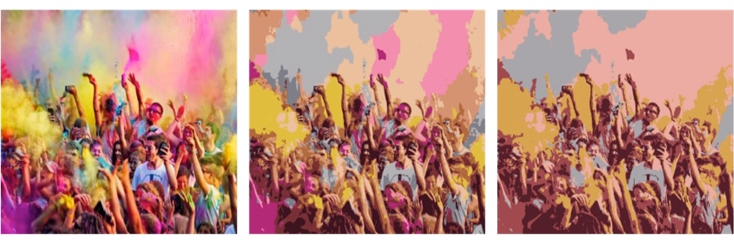

Image Compression with K-Means
A photo stores 16.7 million possible colours per pixel, but it rarely needs them. Clustering the pixels into K representative colours keeps the picture and drops most of the bits.
- Unsupervised learning
- Pattern Recognition course
- University of Tehran · 2020
- scikit-learn · NumPy · Pillow

The idea
Every pixel is a point in 3-D colour space (R, G, B). K-means groups those points into K clusters and replaces each pixel with the centre of its cluster. The image is then stored as a small palette of K colours plus one short index per pixel. It is lossy: the original colours cannot be recovered, and a smaller K means a larger gap between the two images.
- FlattenReshape the H×W×3 image into a list of H·W colour points.
- InitialisePick K starting centres with k-means++, which spreads them apart.
- AssignGive every pixel the label of its nearest centre (Euclidean distance in RGB).
- UpdateMove each centre to the mean colour of its pixels, and repeat until it settles.
- EncodeKeep the K-colour palette and a ⌈log2K⌉-bit index per pixel.
Try it
K-means on the project's forest photo
Runs in your browserDrag the slider. Each change re-runs k-means++ and Lloyd's iterations on a sample of the pixels, then recolours the full image.
Palette
Error vs. number of colours
Mean squared error per channel, measured on a fixed pixel sample. The marker is the current K.
What I found
The error curve falls steeply for the first few colours and then flattens: going from 2 to 8 colours removes most of the visible damage, while each step past ~16 buys little. In the assignment I swept K from 10 to 19 with scikit-learn, plotted the reconstruction MSE, and used K = 20 for the final image.
At K = 20 every pixel fits in 5 bits instead of 24. The palette itself costs only 20 × 24 bits, so for a 650×488 photo the pixel data shrinks almost five-fold before any entropy coding.
Why it works. Natural photos use a narrow, clumpy part of colour space: a forest is mostly greens, browns and sky. K-means puts its centres where the pixels actually are, so a few dozen colours cover the image far better than a uniform 5-bit grid would.